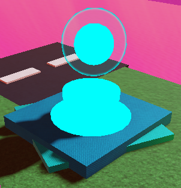

Bitlands es un mundo mágico donde los humanos vivieron durante mucho tiempo. Estos seres buscaban un poder, lo que a día de hoy se conoce como Bitcore, el poder ancestral y vital de Bitlands. Con ello intentaron crear un prototipo para lo que acabarían siendo los Pyces, pero algo pasó: este prototipo tuvo un fallo, un fallo que sería fatal para los humanos.
Cuando este fallo ocurrió, todos los humanos fueron expulsados de Bitlands por una explosión y se los envió a diferentes dimensiones, donde nunca pudieron volver... Este prototipo ahora se lo conoce como KirByte_Bi, o Kirb para los amigos.
El investigador que dio a cabo el prototipo y todas las investigaciones, junto a la creación de Pixible, se llama Corein Bytech. En el actual Bitlands aún se pueden encontrar sus escritos que revelan su nombre y algunos proyectos o explicaciones de los Pyce que quería crear y pudo... ¿Conocer?
El primer mundo que visitas y el centro de Bitlands. Tiene montañas nevadas con secretos, prados y puentes que conectan todo.
Subzona - La Tienda: Aquí puedes conseguir Pyces tanto de la precuela (con sus respectivos emblemas) o comprar Pyces con tus Robux, que al parecer tienen un valor mayor a las PyCoins que usan los Pyces para negociar o comprar.
Una ciudad amplia con un parking de dos pisos que fue derruido tras la explosión del prototipo. Se dice que ahí hizo el experimento Corein Bytech, por eso la segunda planta está destruida. Sin embargo, a los Pyces les encanta, pues es material para grafitear y hacer parkour por los edificios y las grúas que hacen de este lugar una zona activa.
El ardiente volcán y sus cuevas son un atractivo muy necesario para este mundo. El exterior del volcán es escalable y no es fácil, pues la abundante lava y suelos inquietos hacen de la escalada un reto. Los Pyces que habitan el exterior son extraños: algunos son materiales volcánicos, otros son gemas...
Subzona - La Cueva Volcanica: Está a una esquina del volcán, donde habitan Pyces convertidos en gemas y mineros. Se dice que las gemas son un material necesario para el equilibrio, y ahí entra en juego el Eternium (gema de la eternidad) y Paradoxium (gema del tiempo).
Los humanos quisieron poder respirar bajo el agua sin necesidad de ahogarse, entonces Corein ideó una botella, la hizo gigante y la puso en el agua.
Ahora es un lugar donde los "Pysh" (Pyce + Pez) conviven adaptados a este entorno. Estos Pyces están adaptados al agua, porque los convencionales se apagarían inevitablemente. El entorno de la botella aguarda unas ruinas derruidas que podrían haber sido algo.
La entrada a esta zona desde GreenWare también entra en la "UW" zone, siendo una pequeña playa para pescar y donde hay castillos de arena, porque no a todos los Pyces les gusta nadar.

Orbe de teletransporte entre zonas
Cuando empiezas a jugar, estarás en GreenWare. Por este hay repartidos portales conocidos como orbes, que al tocarlos accederás a otras zonas. Aunque también puedes usar el conocido botón de Fast Travel que hay al lado del botón para abrir Pixible, muy práctico para cuando algo se hace repetitivo.
✨ Recomendamos usar los orbes para no dejar ningún sitio sin recorrer, pues puedes perderte Pyces o sitios secretos si no visitas dichos lugares.